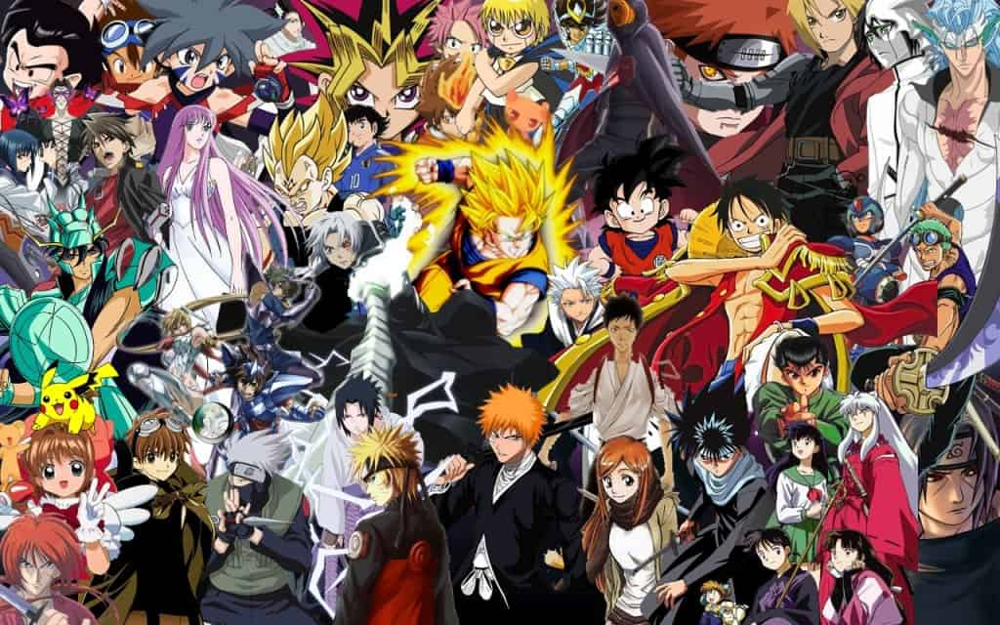

Hobbies


My hobbies are
- Coding
- Reading Books and Manga
- Watching Anime, Korean Drama, Nepali, and Indian Cinema
- Playing Video Games
- Playing sports
Coding is something I started during the junior year of my high school and don't have a lot of experience but I really enjoy coding. Building a website using HTML, CSS, JAVASCRIPT, and Bootstrap is what I enjoy the most as of right now. Most likely because I had a much easier time learning and implementing them.
Favorite Book Series
I have read dozens of books but some of my most memorable book series are:
- The FableHaven Series
- The Five Kingdom Series
- The Dragonwatch Series(not yet completed)
- The Percy Jackson Series
- The Heroes of Olympus Series
- The Kane Chronicles
- Magnus Chase and the Gods of Asgard
Favorite Manga/Webcomic
I got into reading Manga in 2018 but since than I have read so many that I have lost count. Some of my favorites are:
- Solo Leveling
- Tower of God
- God of Martial Arts
- Flow
- unOrdinary
- Girls of the Wild's
- Gosu
- Noblesse
- Soul Cartel
Favorite Animes
I have watched hundreds of anime but some of my favorite ones are:
- Dragonball Series
- One Piece
- Bleach
- The Seven Deadly Sins Series
- Demon Slayer
- Food Wars(Shokugeki no Soma)
- Attack on Titans
- Haukyuu!! Series
- One Punch Man
Favorite Korean Dramas
I never thought I would watch Korean Drama. I knew it was big amongst my friends but that didn't influence my decision to start watching them. My brother got into watching Korean Drama and he told me watch one and from that point on, I have watched a few. Some of my favorites are:
- While You Were Sleeping
- Pinocchio
- My ID is Gangnam Beauty
- Angel's Last Mission: Love
- Hospital Playlist
- Reply 1988
Favorite movie from Nepali Cinema
Since I was born in Nepal, I have watched far more movies and shows from Nepal. Some of my favorites are:
- Nai Nabhannu La
- Nai Nabhannu La 2
- Kabaddi
- Kabaddi Kabaddi
- Kabbaddi Kabaddi Kabaddi
- Meri Bassai(a show)
- Risaani Maaf(a show)
Favorite movie from Indian Cinema
Nepali and Hindi are very similar, in terms of their alphabets and sounds. I don't know since when I could understand hindi but I have watched my fair share of movies and shows from Indian Cinema. Some of my favorites are:
- Bahubali: The Beginning
- Bahubali: The Conclusion
- Kal Ho Naa Ho
- Housefull
- Pyaar Ka Punchnama
- C.I.D(a show)
- Adaalat(a show)
Video Games
I only started playing video games after I moved to the U.S. because my family didn't have internet or computers in Nepal. I haven't played many video games but some of my favorites are:
- Counter Strike: Global Offense
- Dragonball Xenoverse 2
- Firecry 4
- Fifa 2016
Sports
I enjoy playing all the sports out there except football and I have never played baseball. The list below is ordered by how much I enjoy the sport.
- Soccer
- Basketball
- Volleyboll
- Badminton
- Ping Pong
- Ultimate Frisbee
Although boardgames aren't technically sports but I do enjoy playing them nevertheless. My favorites are:
Chess
Cheeckers
Uno
Battleship